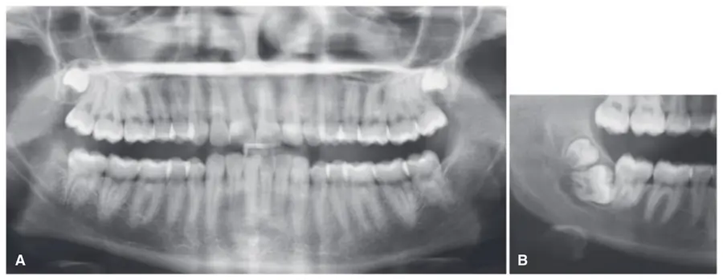
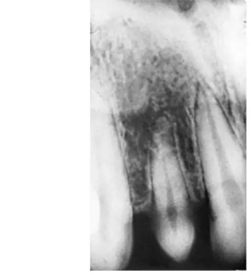

نسخه استخراجشده؛ ترجمه یا تأیید علمی انجام نشده است. وضعیت: captured
سادهترین کاری که روی هر پانورامیک میتوانی بکنی، شمردن است — و همان یک کار، چند تشخیص را باز میکند.

دندان اضافه (supernumerary) از مازاد لامینا دنتال پدید میآید. اگر شکل و ساختارش کاملاً طبیعی باشد، به آن supplemental هم میگویند.
و چهار نام بر اساس محل — اینها را حفظ کن:
اعداد: شیوع ۰٫۲ تا ۳ درصد، در مردان دو برابر زنان، بیشتر در دندانهای دائمی، و شیوع بالاتر در جمعیتهای آسیایی و بومی.
و یک الگوی محلی کاربردی: دندان اضافهی منفرد بیشتر در ماگزیلای قدامی و ناحیهی مولر ماگزیلا؛ دندانهای اضافهی متعدد بیشتر در ناحیهی پرمولر و مولر مندیبل، و در مندیبل اغلب در سمت لینگوال زائدهی آلوئولار.
و اشتباه رایج تصویری: در پانورامیک، دندان اضافهی ماگزیلای قدامی ممکن است زیر تصویر ستون فقرات گردنی پنهان شود، یا اگر بیرون از فوکال تراف باشد دیستورت دیده شود. برای تعیین محل دقیق و شمارش کامل، CBCT.
و عوارضی که دندان اضافه میسازد: نهفتگی، تأخیر رویش، رویش اکتوپیک، شلوغی، ناهنجاری فاصله، تحلیل ریشهی دندانهای مجاور، و تشکیل کیست دنتیجروس — که در بحث کیستها دیدی.
و دو سندرمی که با دندان اضافهی متعدد گره خوردهاند: دیسپلازی کلیدوکرانیال و پولیپوز آدنوماتوز فامیلیال (سندرم گاردنر). دیدن چند دندان اضافه، یعنی وقت پرسیدن سابقهی خانوادگی.
اول یک نکتهی واژگانی: بهجای «فقدان مادرزادی»، اصطلاح «غیاب تکاملی» (developmentally absent) درستتر است — چون دندان دائمی پس از تولد شکل میگیرد، پس نمیتواند «مادرزادی» غایب باشد.

و سه واژهی درجهبندی:
ترتیب شیوع غیاب: مولر سوم، سپس پرمولر دوم مندیبل، سپس لترال ماگزیلا و سانترال مندیبل. غیاب پرمولر دوم مندیبل بیشتر یکطرفه، و غیاب لترال بیشتر دوطرفه است. و در دندانهای شیری — که غیابشان نادر است — معمولاً انسیزور ماگزیلا غایب میشود.
و مهمترین هشدار عملی این درس: پیش از آنکه دندانی را «غایب» بنویسی، بدان که رویش برخی دندانها — بهویژه پرمولر دوم مندیبل — میتواند سالها دیرتر از زمان معمول رخ دهد، و دندان قرینه میتواند تا یک سال زودتر بروید. تشخیص غیاب تکاملی نیازمند نبود دندان در بالین و تصویر و نبود سابقهی کشیدن است.
و همراهیها: هیپودنشیا اغلب غیرسندرمی است، ولی میتواند با شکاف لب و کام، سندرم داون و دیسپلازی اکتودرمال همراه باشد. در دیسپلازی اکتودرمال، بیمار افزون بر دندانهای غایب ممکن است غدد عرق نداشته باشد، موی نازک و پوست ظریف و ناخنهای بدشکل داشته باشد، و دندانهایش شکل مخروطی یا کانینمانند بگیرند.
و اندازه: ماکرودنشیا = دندانی بیش از دو انحراف معیار بزرگتر از میانگین همان دندان. شیوع ۰٫۰۳ تا ۱٫۹ درصد، بیشتر در مردان، بیشتر در دائمی، بیشتر در ماگزیلا، و بیشتر در انسیزور و کانین — در پرمولر و مولر بسیار نادر. علتش نامعلوم است، ولی همانژیوم مجاور، همیهایپرتروفی صورت و ژیگانتیسم میتوانند آن را بسازند.
و میکرودنشیا: بیشتر لترال ماگزیلا (شکل میخی/peg) و مولر سوم. میکرودنشیای منتشر بسیار نادر است و با کوتولگی هیپوفیزی دیده میشود. و یک نکتهی مهم: پرتودرمانی، شیمیدرمانی و آلایندههای آلی پایدار در دوران تکامل دندان هم میتوانند میکرودنشیا بسازند.